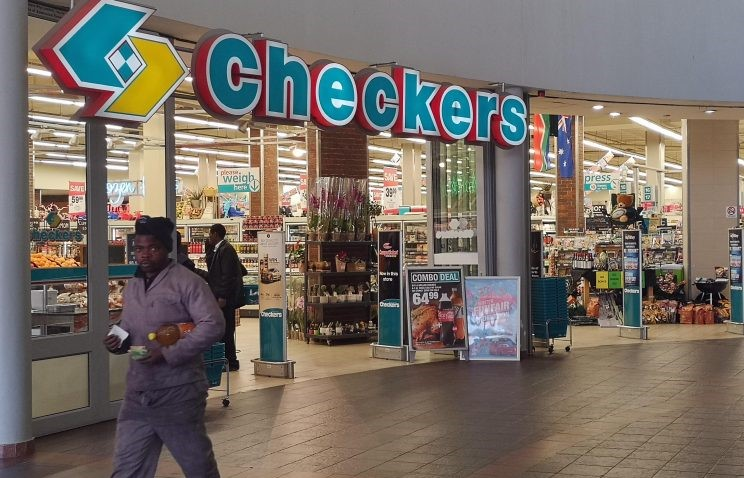
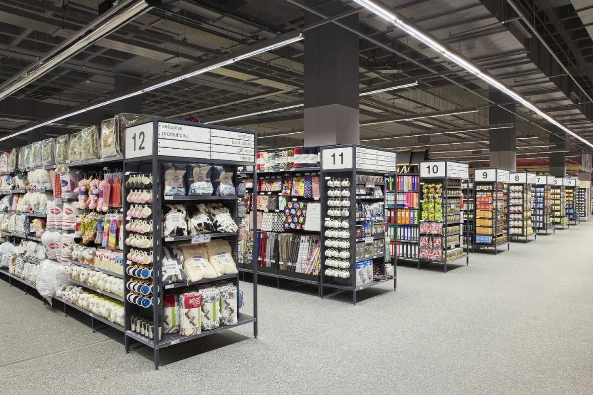
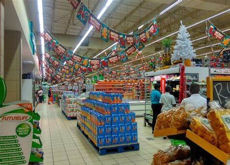
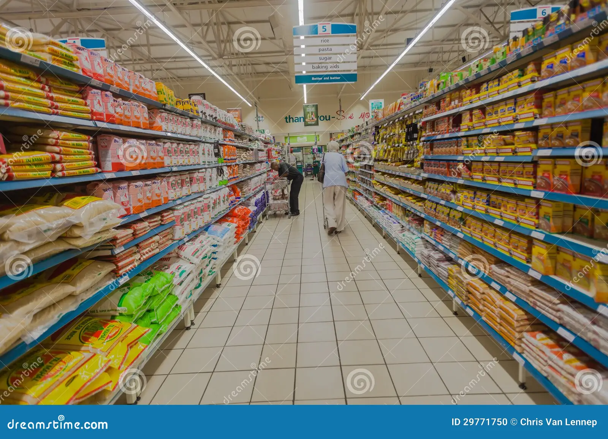

CHECKERS




A Brief on us : Checkers is a distinguished supermarket chain in South Africa, part of the Shoprite Group, known for serving the mid-to-upper segment of the market with a focus on convenience, quality, and freshness. Since its inception in 1956 in Mayfair, Johannesburg, Checkers has been at the forefront of retail innovation, from introducing the country’s first locally manufactured trolleys to pioneering the trolley lock system.
Where are we located : 1st floor , shop E